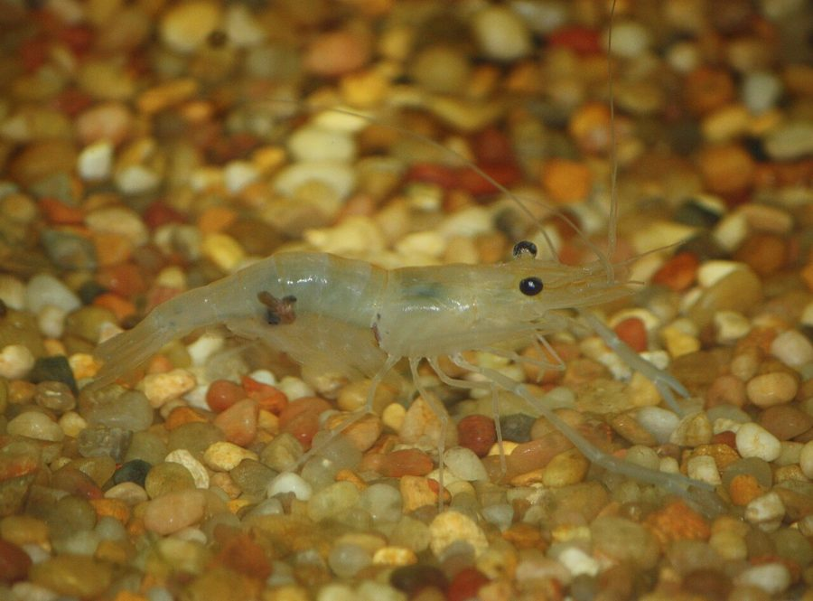

छोटा झींगाFreshwater Grass Shrimp
Macrobrachium lamarrei · Palaemonidae · CRU-0004

- Scientific name
- Macrobrachium lamarrei (H. Milne Edwards, 1837)
- Family
- Palaemonidae
- Hindi
- छोटा झींगा
- Status here
- native
- IUCN
- not evaluated
When to look कब देखें
Expected mainly in March, April, May, June, July, August, September, October, November.
छोटा झींगा / Freshwater Grass Shrimp
Macrobrachium lamarrei (H. Milne Edwards, 1837) — Palaemonidae
छोटा झींगा (फ्रेशवॉटर ग्रास श्रिम्प / लामारे झींगा) — पूर्वी उत्तर प्रदेश के तालाबों के किनारों, सिंचाई नहरों, धान के खेतों और धीमी गति से बहने वाली नदियों के उथले पानी में पाया जाने वाला एक बहुत ही छोटा, अर्ध-पारदर्शी मीठे पानी का झींगा (small semi-transparent freshwater shrimp) है। इसकी लंबाई लगभग 30 से 60 मिमी होती है। इसका शरीर कांच की तरह साफ और पारदर्शी होता है, जिस पर हल्के भूरे या हरे रंग के महीन बैंड बने होते हैं, जिसके कारण यह पानी में तैरते समय लगभग अदृश्य हो जाता है। यह मुख्य रूप से पानी की निचली सतह पर सड़े-गले पौधों और मृत कार्बनिक पदार्थों को खाने वाला एक अपमार्जक (scavenger/detritivore) है, जो जलीय पारिस्थितिकी तंत्र को साफ रखने में मदद करता है। यह गंगा नदी में मिलने वाले विशाल गंगा झींगा (Ganga River Prawn) की तुलना में बहुत छोटा होता है और इसके पंजे पतले होते हैं।
Quick Identification त्वरित पहचान
| Feature | Description |
|---|---|
| Size | Small shrimp; adult total length around 30–60 mm (much smaller than the river prawn) |
| Colouration | Semi-transparent, glass-like body; has fine light-brownish or greenish stripes across the abdomen |
| Claws | Second pair of walking legs (chelipeds) is modified into thin, delicate, smooth claws, equal in size |
| Rostrum | Long, saw-like snout (rostrum) projecting forward from the head, curved upward at the tip |
| Rostrum Teeth | 6 to 9 sharp teeth on the upper (dorsal) edge and 3 to 5 teeth on the lower (ventral) edge |
Field tip: Stand quietly at the shallow, vegetated margin of a village pond in Basti. Watch the waterweed stems close to the surface. You may spot tiny, clear, glass-like shrimps swimming backward with sudden jerks or crawling slowly on hydrilla leaves. If you scoop them up in a fine net, they will jump actively. The female resembles the male and is shown in the field tip.
Morphology आकारिकी
Biometrics (typical measurements of adults in the northern Indian plains):
| Measurement | Range |
|---|---|
| Total body length | 30–60 mm |
| Carapace length | 10–18 mm |
| Rostrum length | 8–14 mm |
| Dorsal rostrum teeth | 6–9 teeth |
| Ventral rostrum teeth | 3–5 teeth |
| Average weight | 1.5–3.5 g |
Adult Shrimp:
- Exoskeleton: Thin, smooth, semi-transparent, showing the internal organs and muscles through the shell. The abdomen has 6 segments, ending in a tail fan (telson and uropods) used for rapid backward swimming.
- Rostrum (Snout): Well-developed, extending past the antennal scales, with a distinct upward curve at the tip. The dorsal margin has 6–9 teeth (usually with a gap near the tip), and the ventral margin has 3–5 teeth.
- Appendages: Five pairs of walking legs (pereiopods) and five pairs of swimming legs (pleopods). The second pair of walking legs is slightly larger and carries thin, smooth claws.
Behaviour & Ecology व्यवहार और पारिस्थितिकी
- Benthic Scavenger: Spends most of its time crawling on the pond floor or climbing aquatic weeds. It uses its claws to pick up and feed on organic detritus, microscopic algae, and dead insect carcasses.
- Retro-propulsion (Tail-flick): When threatened by a predator, it flexes its abdomen and tail fan rapidly under its body. This "tail-flick" shoots the shrimp backward at high speed, escaping the predator's strike.
- Direct Development: Unlike marine shrimps that have complex larval stages, this freshwater species exhibits direct or abbreviated larval development. The female carries fertilised eggs under her abdomen, and they hatch directly into tiny, fully formed crawling juveniles (minimizing drift in freshwater currents).
Life Cycle / Phenology जीवन चक्र
- Reproduction: Peak breeding occurs during the warm monsoon months (June to September).
- Maternal care (Berried Females): The female carries 80 to 250 round, green-yellow eggs attached to the swimming legs under her abdomen. Females carrying eggs are called "berried." She continuously fans the eggs with her legs to keep them oxygenated.
- Hatching: Eggs hatch in 15–20 days directly into miniature juveniles (approx. 4 mm) that hide in fine weeds.
Host Plants or Prey आहार
Primary food sources:
- Detritus: Decomposing aquatic vegetation and organic sediment at the pond floor.
- Algae: Benthic diatoms and green algae films on Hydrilla stems.
Predators / Natural Enemies शत्रु
- Fish: Predatory fish like walking catfish (Clarias batrachus) and pool barbs (Puntius sophore) hunt them.
- Birds: Wading birds like egrets, herons, and the Common Sandpiper (Actitis hypoleucos) capture them in shallow margins.
- Insects: Large predatory water bugs (Belostomatidae) capture them.
Agricultural / Human Relevance कृषि प्रासंगिकता
Nutritional resource and environmental cleaner:
- Food source: Although small, they are harvested in large numbers using fine nets by local fishing communities in Basti. They are sold in village markets, often fried or cooked whole, providing a cheap source of calcium and protein.
- Paddy cleaners: In flooded paddy fields, they consume decaying weeds and algae, recycling nutrients and improving soil fertility.
- Aquarium trade: Popular as a natural cleaner in home aquariums, cleaning algae and food waste.
Expected Locally स्थानीय रूप से अपेक्षित
Not a field record. Written from published accounts for eastern Uttar Pradesh. No confirmed local sighting yet — if you have seen it, that is what the atlas needs.
अभी तक स्थानीय पुष्टि नहीं। यह विवरण प्रकाशित स्रोतों से है, किसी अवलोकन से नहीं।
A very common resident in shallow freshwater throughout the Basti district, recorded in village ponds (talab), canals, and flooded rice fields in the Harraiya, Vikramjot, and Basti blocks. Fishing communities collect them using traditional bamboo basket traps (delwa) placed in irrigation channels during the late monsoon (September).
Distribution वितरण
Global range: Widespread across South Asia (India, Pakistan, Nepal, Bangladesh).
In India: Widespread in all major freshwater river basins and plains, particularly the Indo-Gangetic plains.
In Uttar Pradesh: Abundant state-wide in all riverine and agricultural districts.
In Basti district / eastern UP: Common across all blocks near wet channels.
Research Questions शोध प्रश्न
Anyone can investigate these | कोई भी इन प्रश्नों की जाँच कर सकता है
- How many pointed teeth are present on the upper edge of the snout of a grass shrimp collected from your local pond? — Examine under a magnifying glass.
- Do grass shrimps prefer hiding in dense Hydrilla weeds over open sandy pond bottoms? / क्या छोटा झींगा खुले रेतीले तालाब के तल की तुलना में घनी हाइड्रिला घास में छिपना अधिक पसंद करता है? — Conduct choice tests.
- What is the average number of green eggs carried by a "berried" female grass shrimp in July? — Count eggs on collected females.
- How do grass shrimps respond when a predatory fish models nearby in a container? — Monitor backward tail-flick counts.
- Does the population density of grass shrimps drop in rice fields when water levels dry up in late October? / क्या अक्टूबर के अंत में धान के खेतों में पानी सूखने पर छोटे झींगे की आबादी कम हो जाती है? — Track weekly counts in drying fields.
Similar Species मिलती-जुलती प्रजातियाँ
| Species | How to tell apart | comparison |
|---|---|---|
| Ganga River Prawn (Macrobrachium gangeticum) | Much larger (body 150–250 mm); male has massive, heavy, blue-colored claws; found in main river channels | गंगा झींगा — बहुत बड़ा आकार, भारी नीले पंजे |
| Freshwater Crab (Paratelphusa spinigera) | Flat, rounded carapace; heavy claws; crawling lifestyle, lacks swimming legs | केकड़ा — गोल चपटा शरीर, तैराकी पैरों का अभाव |
| Long-jawed Spider (Tetragnatha mandibulata) | Has only 8 legs; lives above water on grass; spins horizontal webs | लंबे जबड़े की मकड़ी — 8 पैर, जल के ऊपर निवास |
Field rule: Small, semi-transparent freshwater shrimp (30–60 mm) with a saw-like snout bearing 6–9 dorsal teeth, swimming with sudden jerks in shallow pond margins, is the Freshwater Grass Shrimp.
Taxonomy & Classification वर्गीकरण
Original description. Henri Milne Edwards described the Freshwater Grass Shrimp as Palaemon lamarrei in 1837 in his Histoire Naturelle des Crustacés (Vol. 2, p. 397). The type locality was listed as India (Gangetic coasts). It was later placed in the genus Macrobrachium by Bate. The genus name Macrobrachium is derived from the Greek makros (long/large) and brachion (arm/claw). The specific name lamarrei honors the French naturalist Jean-Baptiste Lamarck.
Subspecies. Monotypic — no subspecies are currently recognised.
Family and order placement. Placed in the order Decapoda, suborder Pleocyemata, family Palaemonidae (palaemonid shrimps), subfamily Palaemoninae.
Phylogenetic notes. Macrobrachium lamarrei belongs to the freshwater-adapted clade of palaemonid decapod crustaceans, characterized by the evolution of abbreviated larval stages to breed successfully in inland wetlands away from the sea.
IUCN status rationale. Not evaluated (NE) by the IUCN Red List. It has a highly secure and stable population.
Photo Gallery फोटो गैलरी
References संदर्भ
- Milne Edwards, H. (1837). Histoire Naturelle des Crustacés. Roret, Paris, Vol. 2, p. 397. [original description]
- Kurian, C. V. & Sebastian, V. O. (2007). Prawns and Prawn Fisheries of India. Hindustan Publishing Corporation, New Delhi.
- Holthuis, L. B. (1950). The Palaemonidae Collected by the Siboga and Snellius Expeditions. E.J. Brill, Leiden.
- Tiwari, K. K. (1955). Distribution of the Indo-Burmese Freshwater Prawns of the Genus Macrobrachium. Records of the Indian Museum.
- World Register of Marine Species (2024). Macrobrachium lamarrei Decapoda details.
- GBIF Occurrence Data — Macrobrachium lamarrei, India (2010–2025).
Source file: species/fauna/crustaceans/freshwater_grass_shrimp.md